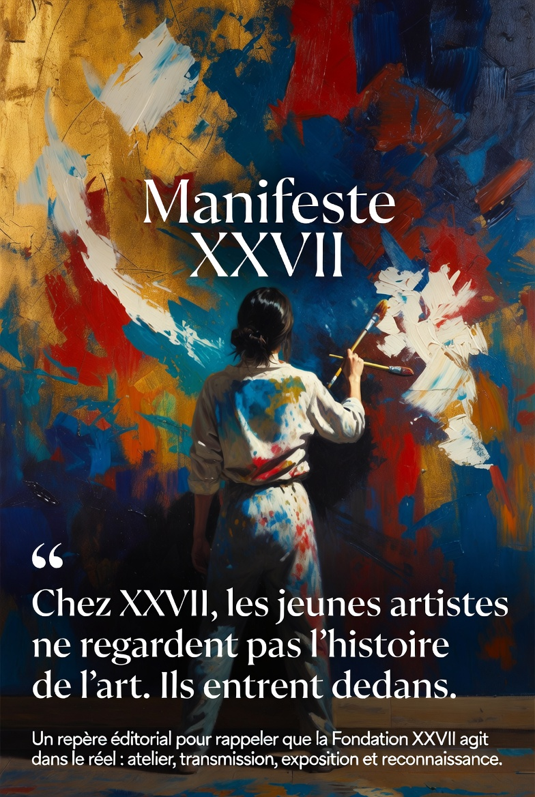
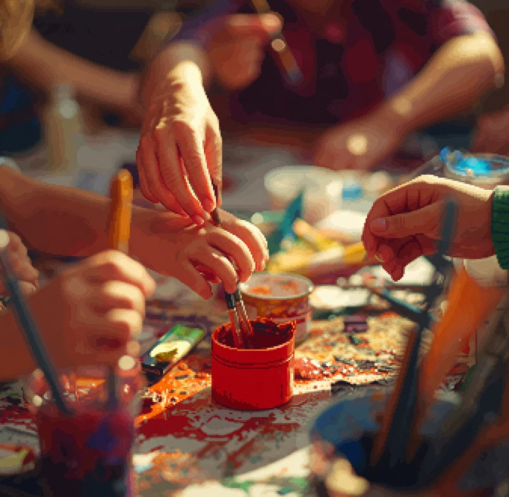
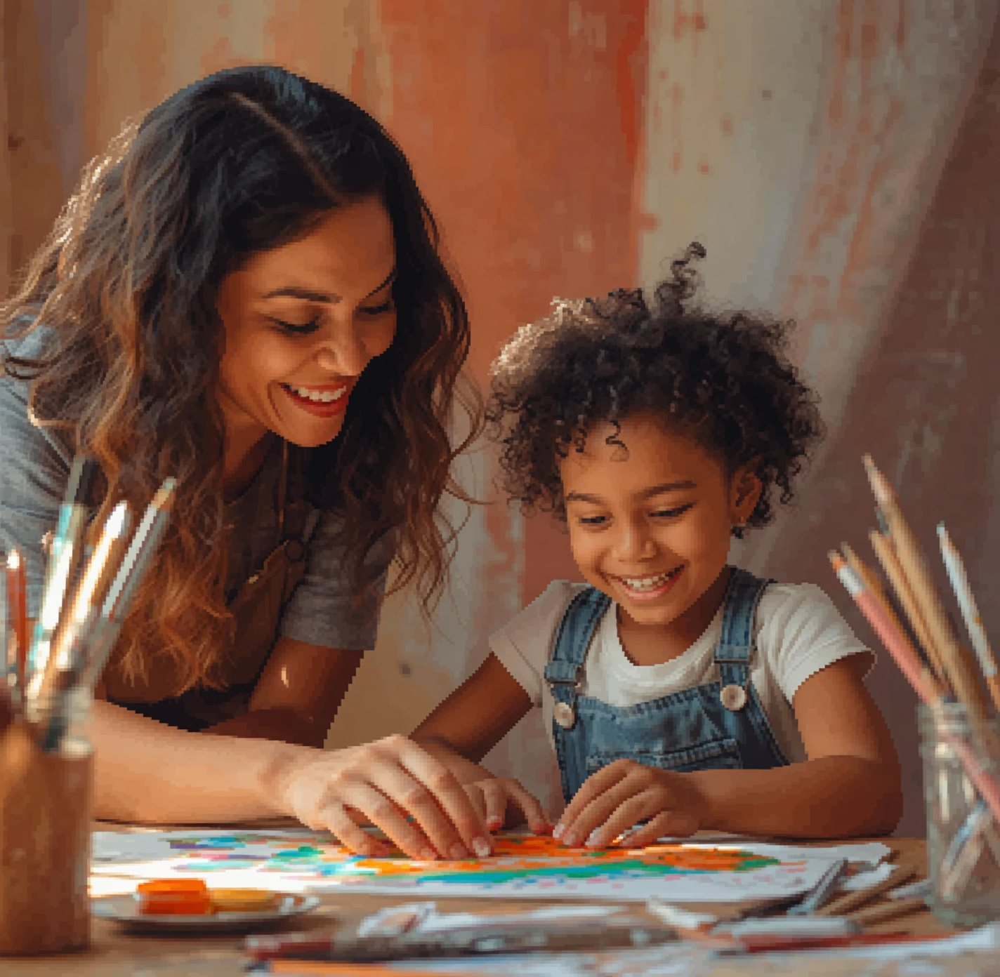
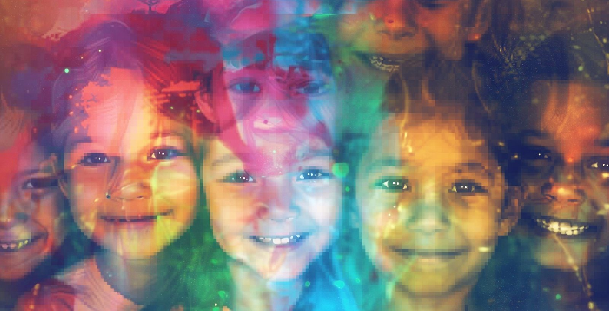
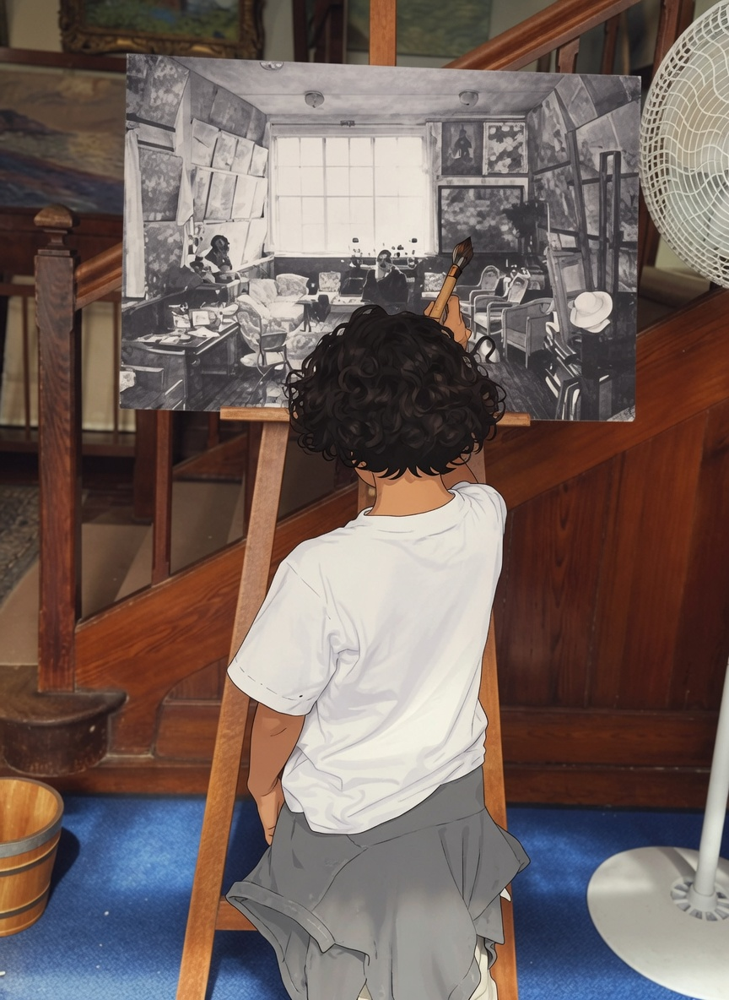
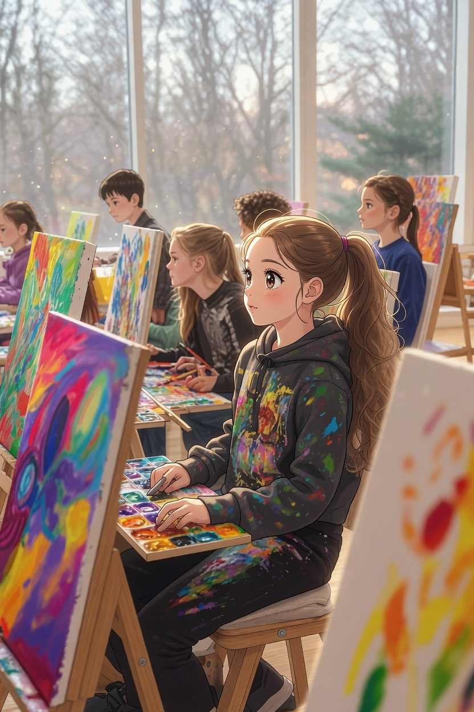
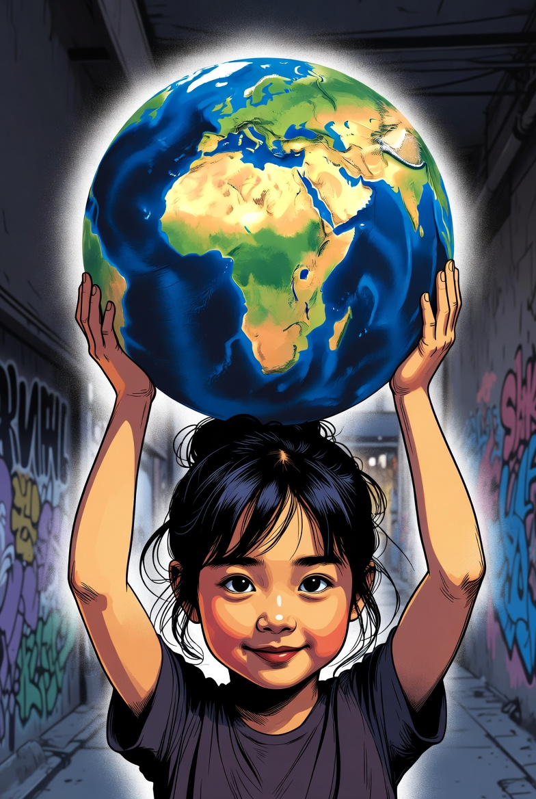
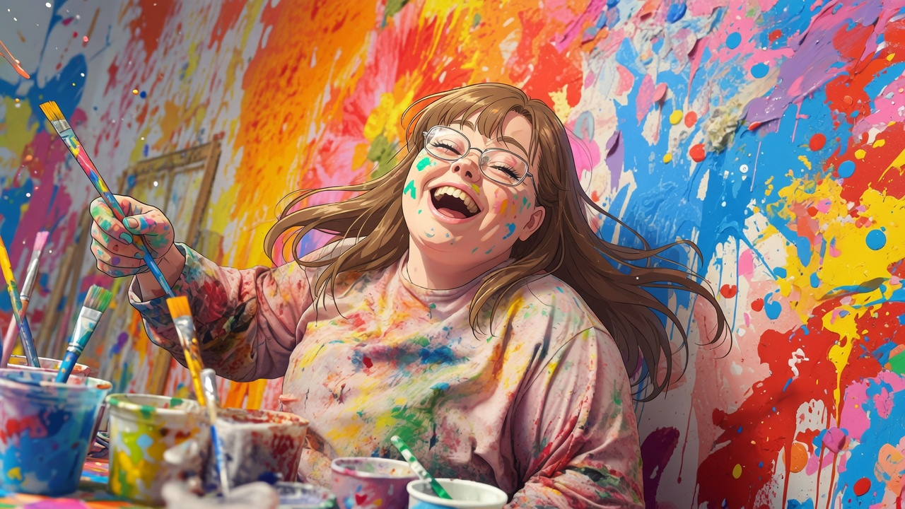
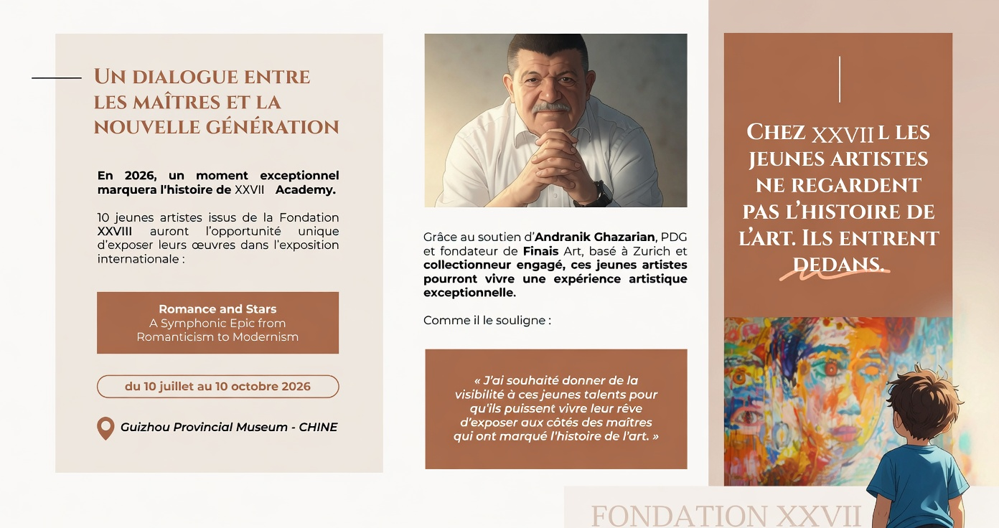

.jpg)
Des projets artistiques à fort impact éducatif et social.
L’art pour révéler les talents
Fondation XXVII
La Fondation XXVII est dédiée à l’art, à la transmission et à l’émergence des talents. Elle accompagne les enfants, les jeunes créateurs et les artistes émergents à travers des projets artistiques inclusifs, vivants et interculturels. En reliant art, éducation, création contemporaine et société, la Fondation XXVII ouvre des espaces de rencontre, de visibilité et de transmission pour révéler les talents d’aujourd’hui et de demain.
L’art n’est pas un luxe. C’est une force de transmission, d’ouverture et d’émergence.
Galerie XXVII
Une présence artistique en images
Découvrez l’univers visuel de la Fondation XXVII, entre transmission, création et rayonnement international.
Manifeste XXVII
Chez XXVII, les jeunes artistes ne regardent pas l’histoire de l’art. Ils entrent dedans.
Un repère éditorial pour rappeler que la Fondation XXVII agit dans le réel : atelier, transmission, exposition et reconnaissance.

Page 2
Nos Actions
Notre action s’articule autour de 3 piliers
Les jeunes talents dans leur parcours de création et de transmission.
Artistes, enfants, institutions et mécènes autour d’une vision commune.


Pourquoi la Suisse ?
La Suisse incarne la neutralité, l’excellence et l’ouverture internationale. C’est un ancrage naturel pour une fondation qui souhaite agir à l’échelle mondiale, en dialogue avec les institutions, les mécènes et les acteurs culturels internationaux.
Notre raison d’être
Pas une fondation. Pas une école d’art. Pas un programme éducatif. Un mouvement. Une révolution silencieuse. Un engagement culturel.
Why
Parce que :
- l’école développe l’esprit, mais rarement l’imaginaire
- les écrans capturent l’attention mais pas le talent
- les enfants grandissent… mais ne s’expriment plus
- l’art est devenu un luxe alors qu’il devrait être un droit fondamental.
Page 3
Vision, mission et ambition 2030
La Fondation XXVII agit pour promouvoir l’interculturalité. Nous portons la vision d’un monde où l’art est accessible à tous. Un monde où l’art devient un outil de dialogue, d’inclusion et de transmission entre les générations et les cultures.
La Fondation XXVII a pour mission de promouvoir l’accès à l’art pour les enfants et les jeunes artistes, encourager la transmission intergénérationnelle par le mentorat, favoriser la pluralité sociale, territoriale et le handicap, créer des passerelles entre art, éducation et monde professionnel, et développer des échanges artistiques internationaux.

1M d’enfants et de jeunes artistes exposés à un enseignement artistique inspirant.
1000 artistes mentors mobilisés autour d’un écosystème national du mentorat culturel.
1 galerie de créativité jeune artiste et 12 expositions internationales.
Gouvernance
Gouvernance et board advisors
« À l’ère du digital, l’art au service de la transmission, de l’impact et des générations futures »
Composée de dirigeants et d’experts des univers de la stratégie, du recrutement et de la finance, l’équipe fondatrice s’est construite au cœur des grands enjeux de transformation.
De ces trajectoires exigeantes est née une conviction commune : l’art est un langage universel et un levier majeur de développement humain.
Face à un monde en hyper-digitalisation, ils ont choisi de créer une fondation qui relie les générations et les cultures, en combinant exigence business, mesure de l’impact et altruisme, au service de l’avenir des enfants.
Parce qu’aujourd’hui, transmettre n’est plus une option. C’est une responsabilité.
Composé d’artistes, curateurs, experts culturels.
Profils hybrides Art / Business / Tech.
Artistes, neuroscientifiques, experts jeunesse, philosophes.
20 mécènes fondateurs.
Créative, éthique, transparente et responsable.
Page 5
XXVII Academy — incubateur d’artistes
Un incubateur d’artistes dès l’enfance, fondé sur le mentorat intergénérationnel, l’exigence artistique et l’ouverture internationale.
Ici, l’art n’est pas un loisir. C’est un chemin, une trajectoire, une projection.


Exemple
Sohan, 6 ans, lauréat de la première édition, peint depuis l’âge de deux ans. Curieux et plein de vie, il transforme tout ce qu’il voit en couleur et en mouvement. Ses toiles racontent ce que ses mots ne savaient pas encore dire. L’art l’a aidé à se concentrer, à apaiser son énergie et à découvrir la beauté du partage.
Page 6
Les laboratoires créatifs et les expositions XXVII
France, Suisse, Japon, Chine, Brésil, États-Unis.
Détection des talents. Interculturalité. Art et développement durable.
Page 7
Projets interculturels
La Fondation XXVII développe des projets artistiques et des échanges interculturels entre la Suisse, la France, la Chine, l’Amérique latine ainsi que les scènes artistiques africaines, arabes et berbères.
L’art devient un langage commun, un espace de dialogue entre cultures et générations.
Page 8
Art x Human Skills x Future of Work
L’art développe les compétences humaines qui définiront les leaders et les créateurs du monde de demain.
Intelligence émotionnelle, persévérance, leadership, adaptabilité, discipline.
Créer des passerelles entre art, éducation et monde professionnel.
Page 9
Passerelles concrètes
Programmes artistiques éducatifs, initiatives de reskilling pour étudiants et professionnels, partenariats avec écoles, universités et entreprises.
Valoriser les compétences artistiques dans les dossiers académiques, accompagner les jeunes talents, sensibiliser les institutions éducatives, construire des partenariats durables.
Mécénat
Soutenir la Fondation XXVII
Chaque soutien ouvre un espace de création, de confiance et de transmission. En devenant mécène ou partenaire, vous contribuez à rendre l’art accessible aux enfants, aux jeunes talents et aux publics éloignés de l’écosystème culturel.
Permettre à des enfants de découvrir la pratique artistique, les matières, le geste et l’expression personnelle.
Soutenir un parcours de mentorat, d’exposition et de progression artistique dans la durée.
Donner de la visibilité aux œuvres et créer des passerelles entre familles, artistes, institutions et mécènes.
Devenir mécène ou partenaire
La Fondation XXVII privilégie une prise de contact directe afin de construire des engagements adaptés : soutien financier, mécénat de compétence, partenariat institutionnel ou accompagnement d’un programme artistique.

Page 11
RSE et impact
Le nombre d’enfants et d’artistes émergents accompagnés permet de mesurer l’impact et la continuité des parcours.
Des projets inclusifs permettent d’accéder à une pratique artistique adaptée et valorisante pour tous.

Page 12
Le parcours d’un talent XXVII
Identifier les jeunes talents via des appels à projets, ateliers et partenariats éducatifs.
Accompagner le développement de la pratique, de la créativité et de l’identité artistique.
Connexion avec curateurs, galeristes, institutions culturelles et collectionneurs.
Page 13
Une exposition internationale d’exception

Partenaires de l’exposition : FINAIS ART · GUIZHOU MUSEUM · SWISS ART
45 œuvres sélectionnées en France, Suisse, Brésil, Chine, Algérie, Belgique… issues de la Fondation XXVII auront l’opportunité unique d’être présentées dans une exposition internationale d’envergure.
Philippe Piguet, héritier de la famille Monet, conduira une conférence d’une heure autour de Claude Monet et de son héritage artistique. Il soutient cette initiative unique, qui permet à de jeunes artistes d’entrer symboliquement dans l’histoire, aux côtés des grands maîtres.
Page 15
XXVII Future of Art Institute
Le premier observatoire international dédié à la transmission culturelle par l’art.
Le XXVII Future of Art Institute est le think tank de la Fondation XXVII. Sa mission est d’étudier, documenter et anticiper les grandes mutations qui façonnent la transmission culturelle, l’éducation artistique et l’émergence des talents à travers le monde.
À travers un réseau international d’artistes, collectionneurs, musées, fondations, chercheurs, institutions, entreprises et acteurs de l’éducation, le XXVII Future of Art Institute ambitionne de constituer un observatoire international de référence consacré à la transmission culturelle par l’art.
Analyser les évolutions du monde de l’art, des pratiques culturelles et des nouveaux modes de transmission entre les générations et les cultures.
Produire des études, rapports, baromètres et travaux de recherche sur l’impact de l’art dans l’éducation, l’inclusion, la cohésion sociale et le développement humain.
Identifier les grandes tendances qui transformeront les pratiques artistiques, la création, le mécénat, la collection et l’accès à la culture dans les prochaines décennies.
Imaginer et tester de nouveaux modèles de transmission artistique et culturelle à travers les programmes de la Fondation XXVII et de ses partenaires internationaux.
Appel à projets
Chaque année, XXVII-Academy lance des appels à projets pour repérer de jeunes talents issus de tous horizons.
Page 16
Une équipe internationale pour révéler les talents
Portée par une équipe fondatrice et des relais internationaux engagés, la Fondation XXVII s’appuie sur des parcours complémentaires, une présence de terrain et des réseaux culturels solides pour faire de l’art un levier de transmission, d’ouverture et de dialogue entre les cultures.
Cofondatrice
Anissa Jolly
Cofondatrice de la Fondation XXVII, Anissa Jolly met son expérience du conseil, de la gouvernance et de l’accompagnement des talents au service d’une ambition : faire de l’art un levier de révélation, de transmission et de rayonnement international.
Cofondateur
Farouk Boumoula
Cofondateur de la Fondation XXVII, Farouk Boumoula œuvre au développement artistique en mobilisant son expérience entre la France et la Suisse, son réseau institutionnel et sa capacité à structurer des projets à fort rayonnement international.
Directrice Brésil — Développement institutionnel & Partenariats
Emma Grenon
Consultante et curatrice basée entre Paris et Rio de Janeiro, Emma développe une approche à la croisée du conseil stratégique, de la création contemporaine et du dialogue interculturel. Au sein de la Fondation XXVII, elle coordonne les partenariats institutionnels au Brésil et relie artistes, institutions, mécènes et jeunes talents.
Directrice Chine — Développement institutionnel & Partenariats
Céline Zhao
Céline accompagne le développement de la Fondation XXVII en Chine, en s’appuyant sur une connaissance fine du territoire, de ses réseaux culturels et de son écosystème artistique. Son parcours et ses connexions dans le monde de l’art lui permettent de créer des passerelles solides.
Japon — Développement institutionnel & Partenariats
Kunihisa Ohara
Kunihisa développe la visibilité et les partenariats institutionnels de la Fondation XXVII au Japon, en mobilisant son expérience d’un business international exigeant et ses réseaux économiques, culturels et stratégiques.